Background
This project is one of my all-time favorites for its "why not?" inspiration. Almost no unexpected issues occured, everything miraculously went more or less according to plan, a very rare occurance. I am quite happy with the final product, and I use it to get around town on a daily basis. It tops out at about 23 mph.
Some modifications I have made since the completion of this project include:
- The replacement of the old SLA batteries with lithium-iron-phosphate. The old batteries frankly sucked and constantly sagged in voltage and were heavy. I am very happy with the lithium pack.
- The replacement of the scooter motor with a 1000w 48v hub motor straight out of an e-bike conversion kit. The old motor burnt out on me (due to over voltage - It was rated for 36v and I had 48v of batteries and a 48v controller). I welded a mount for it out of some 1" x .25" bar stock and bolted it down.
- The replacement of the HDPE steering column support bushing with one made from delrin after my homebrew HDPE cracked.
Frame
I started this project with an old school desk that the high school janitors kindly let me keep.
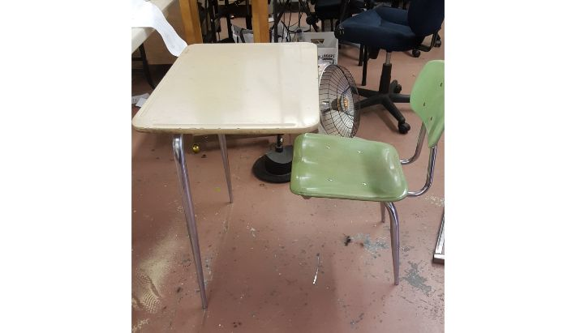 The old school desk, courtesy of the janitorial staff.
The basic frame for this gokart consists of 1" square steel tubing with a wall thickness of 0.125". I simply cut the steel to "connect the dots" between the chair legs, and welded them together. I also welded on two shorter lengths of steel perpendicular to the rear base of the frame to mount the pillowblocks that would eventually accomodate the 1" axle.
 Frame welded up.
Frame welded up.
 Pillow blocks mounted.
Pillow blocks mounted.
Rear Axle
I machined the axle out of 1" cold rolled steel round bar. I turned down the ends to 5/8" to accomodate the hubs of the wheels.
 Turning down the end to fit the wheel.
Turning down the end to fit the wheel.
 Axle profile roughed out.
Axle profile roughed out.
I tapped the ends to accept bolts to hold the wheels in place.
 Axle profile roughed out.
Axle profile roughed out.
I decided the gokart would be one wheel drive. This allows the rear wheels to turn independently of one another, eliminating the need to spend hundreds of dollars on a gokart differential. This increases tire life and makes turns smoother. With that in mind, I milled a 3/16" keyway into one end of the axle for the drive wheel hub, leaving the other end unkeyed to accept the free wheel hub.
Milling the keyway.
With that, the axle machining was complete. Here are some photos of the axle layout (minus brake disc)
 Everything but the brake disc.
Everything but the brake disc.

Axle on the gokart (note the basket that wasn't there before- see the battery tray section below).
Brake Disc Hub
Upon deciding to use bicycle disc brakes on the gokart, I had to figure out a way to mount the disc to the axle. So, I machined a hub out of aluminum with a 1" bore to fit the axle and put a keyway in it.
To make placing the disc easier, the hub features a small turned centering ring that locates the center of the disc.
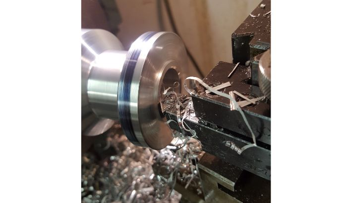 Turning the hub. Note the small centering ring protrusion.
The centering ring allowed me to concentrically place the disc on the hub and then mark the hole pattern. I drilled and tapped the holes for the hardware included with the disc, and then attached the disc to the hub.
Drilling holes to accept the disc.Artsy photo of the disc mounted to the hub.
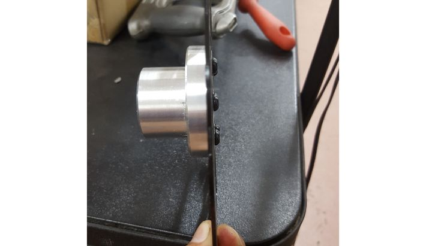 Side wiew of the hub assembly.
Moounting the hub to the axle required keying the hub and axle. To do this on the hub assembly, I used a key cutting broach and an arbor press. With the key set still out, I went ahead and cut a keyway into the axle drive sprocket as well, and in doing so completed the last component of the rear axle assembly.
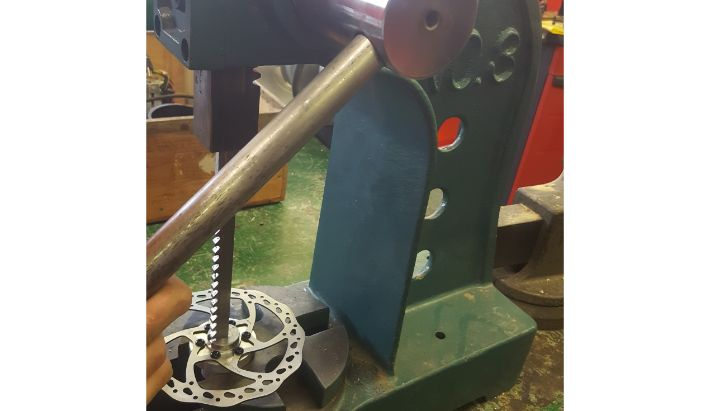 Pressing the key broach through on the arbor press.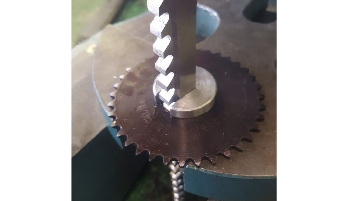 Cutting the keyway into the drive sprocket.
Battery Tray
A crucial part of the image I had in mind of the gokart was keeping the batteries in the basket of the desk. To do this, I first had to cut a basket off of a donor desk to weld on to mine, which did not originally have a basket. I then fabricated a tray out of angle iron, cut a hole in the basket, and welded in the tray. I then cut a rectangle of 16 guage steel that fit the tray and used spray adhesive to stick on a piece of carpet to protect the batteries.
The pieces of angle iron I used to frame the battery tray, extended with welded on tabs.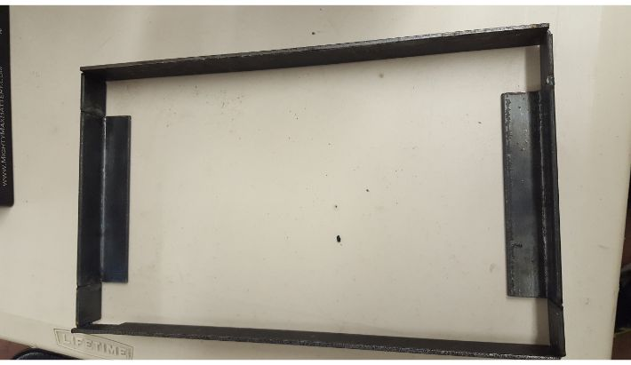 The tray welded together.
The tray welded into the basket.
The carpeted steel insert in place.
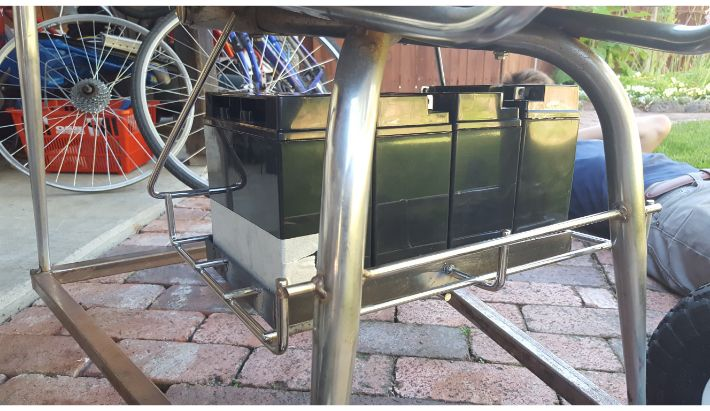 Batteries in place.
The desk at this stage of the build.
Motor and Brakes
The next step was to add motor and brake caliper mounts to the frame. To make the motor mount, I simply welded a length of square tubing to the frame near the back, parallel with the back bar of the frame, spaced off of the back bar to match the motor hole pattern. I then marked the holes with a sharpie, drilled them out, and bolted the motor down to the frame.
The motor mount bar welded into place.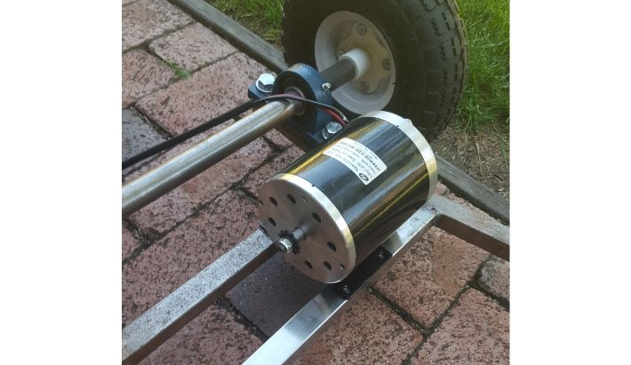 The motor, placed on its new mounts.
The motor installed.
With the motor mounted, I moved on to brakes. To fabricate the brake caliper mount, I started by turning 2 lengths of 0.5 inch round stock, and tapping them to match the hardware that came with the caliper. I then milled two flat spots on the untapped sides of the rounds so as to more easily weld on to the square tubing, spaced out to match the caliper mounting holes. I then welded the square tubing to the frame, elevated off of the motor mount bars by some square tubing standoffs to the proper height to accomodate the brake disc, thus finishing the brake mount.
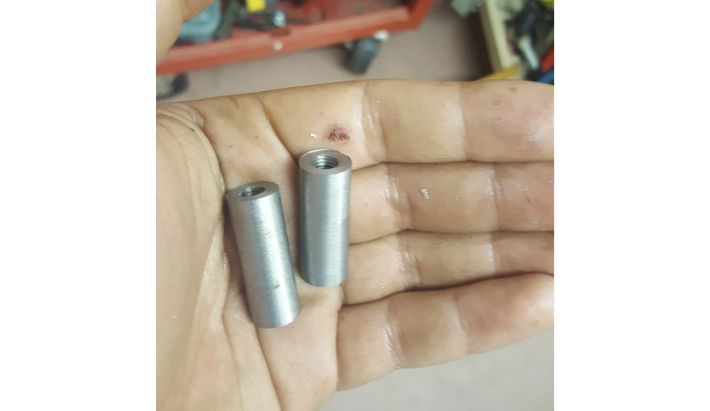 Two lengths of steel round stock, tapped to accept brake disc hardware.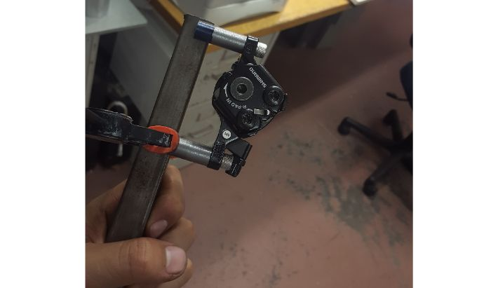 The steel rounds with flat spots milled, positioned on the square tubing for welding.
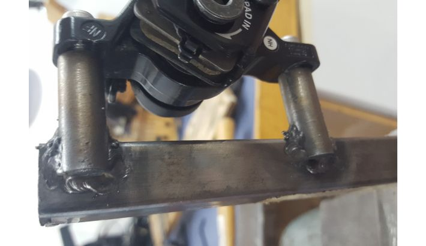 The steel rounds, welded to the square tubing to match the caliper.
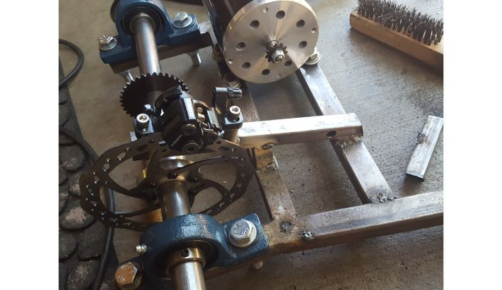 The brake mount assortment welded to the frame to fit the brake disc, completing the whole rear assembly.
Steering Column and Front End
The next step was to add steering and front wheels. This was accomplished by welding spindles to the front legs of the desk, sticking a steering column through the desk panel itself, and connecting the column and spindles with custom tie rods.
The spindles were bought online. They came with a large "c" bracket which could be welded on to the frame. I wanted to weld my spindles to the front legs of the desk, in order to make the desk sit level to the ground. However, the legs were too slender for a proper weld, and also angled inward. With this in mind, I cut some short lengths of 1" steel square tubing and tack-welded them to the frame, around the legs, to provide a better attachment point for the spindle brackets.
Cutting the square tubing.Square tubing tacked to the frame.
Once this was done, I welded the spindle bracket on to the square tubing before putting the desk leg into the square tubing. An issue came up here: the leg of the desk was not completely vertical, so putting the leg straight into the square tubing prevented me from welding the spindle assortment on square to the frame, so I had to cut a large notch out of the square tubing to accomodate the angle of the leg. I finished welding down the square tubing, and welded the desk leg to the square tubing. Finally, I added a 45 degree gusset to further support the spindle assembly and welded it between the square tubing spindle attachment and the front bar of the frame.
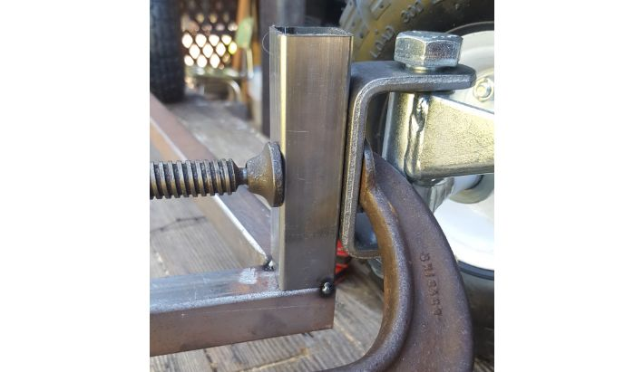 Lining up the spindle bracket clamp for welding.Welding the spindle bracket to the square tubing.
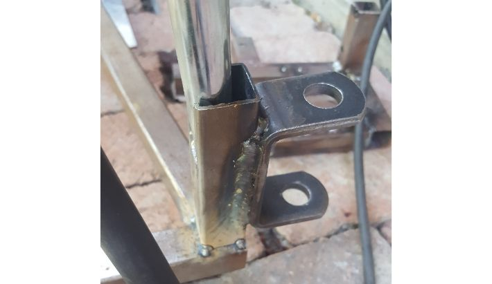 Inserting the desk leg and tacking the square tubing to the frame. Clearance notch is visible.
 Welding down the spindle assembly and gusset to the desk leg.
Welding down the spindle assembly and gusset to the desk leg.
With the spindle bracket assortment complete, it was just a matter of reassembling the spindles by using the included hardware to finish the front wheel assembly, to which, finally, the front wheels could be added.
The next step with the front end was to fabricate and install the steering column. The steering column for this project was bought as a weld-together kit from eBay. The process began by welding the included pitman arms to the steering column.
Squaring up the bottom pitman arm in preparation for welding.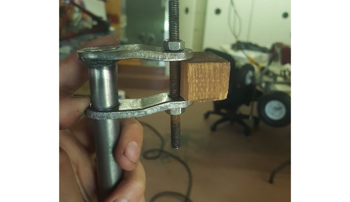 Lining up the top pitman arm in preparation for welding.
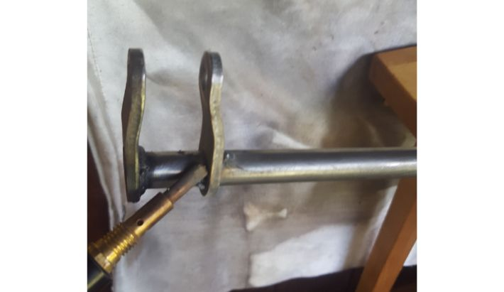 Welding the top pitman arm.
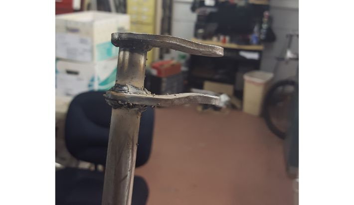 Finished steering column assembly.
To connect the pitman arms and steering column to the spindles and, by corollary, the front tires, I fabricated a set of tie rods. This entailed turning two lengths of 3/8" steel round bar and cutting threads their ends to receive female rod end bearings.
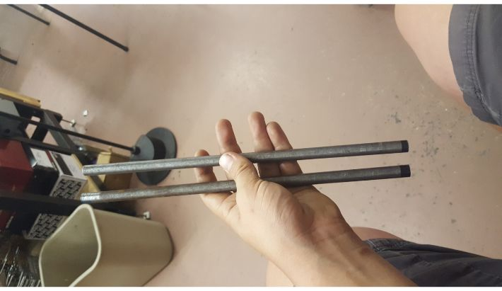 Tie rod stock.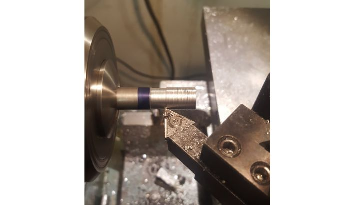 Turning down the ends of the tie rod stock for thread cutting.
Cutting 1/4-28 threads on the ends of the tie rods to accomodate rod end bearings.
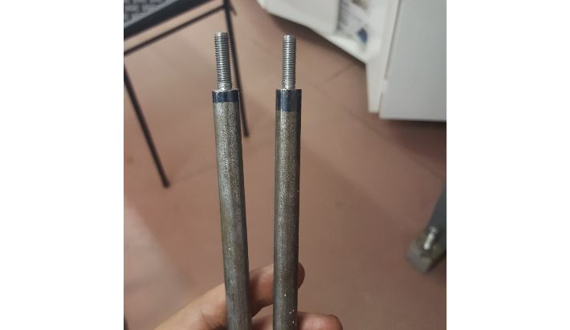 The finished tie rods.
Tie rods with rod end bearings attached.
To hold the steering column to the kart, I drilled an angled hole through the center of the desk panel itself to support the top end of the column, and fabricated a bottom support out of 1" steel square tubing. This bottom support protruded straight up like a tower from the center of the front frame bar. I built it by cutting out opposite sides of the square tube, drilling matching holes in the remaining sides to accomodate a bolt pin. I then welded extra 1/16" steel plate around those holes for support.
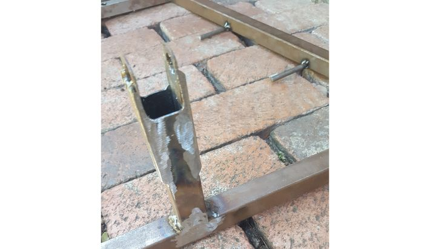 Welding the steel tower to the front bar of the desk.
To hold the steering column to the tower, I needed to design a coupler. Since the coupler would act as a bearing surface against the steering column, I decided to make it out of plastic, specifically HDPE since it has a low coefficient of friction on steel.
I had a bunch of old HDPE milk cartons lying around, so I decided to melt those down into a block which I could then machine. I started this process by cutting the cartons down into smaller pieces on the bandsaw.
Cutting down the old milk cartons.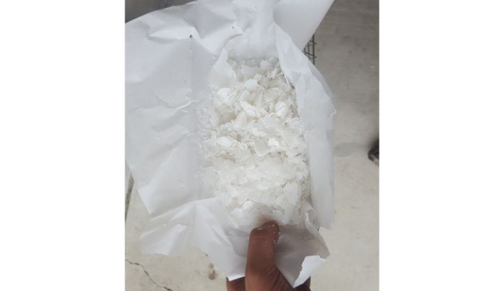 The processed HDPE in a basket.
I then used a toaster oven to heat up the HDPE before molding it into a rough billet.
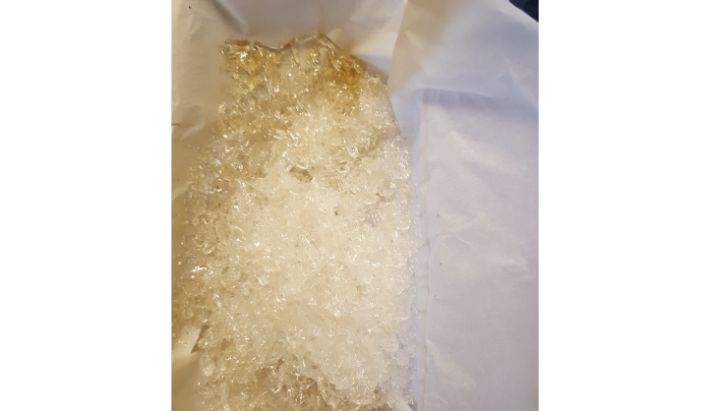 The HDPE right out of the toaster.Shaping the molten HDPE into a machinable billet.
The cooled billet.
Next, I machined the billet down to the profile of the finished coupling. I started by squaring it on the mill using a fly cutter, before drawing the profile, drilling holes, and sanding the blank to its final shape.
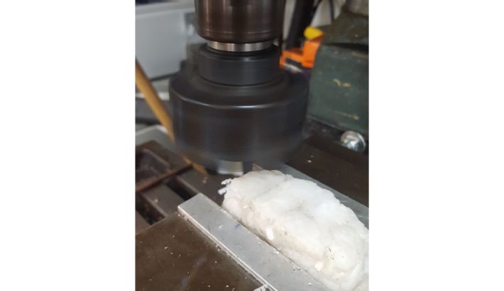 Using a flycutter on the mill to square the billet.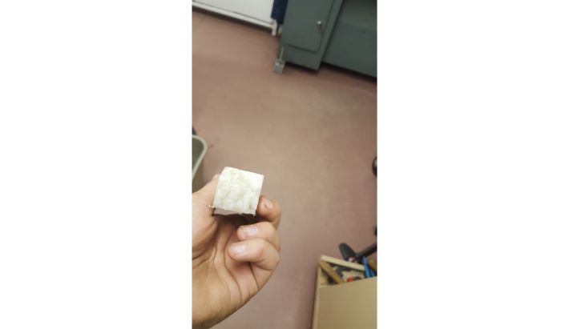 The squared blank.
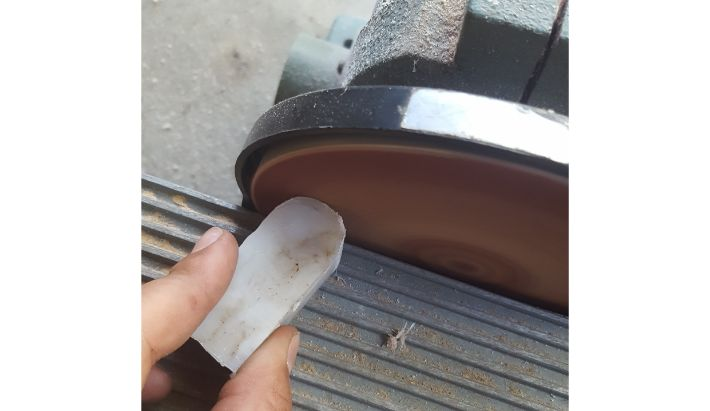 Sanding the blank to profile.
The finished profile.
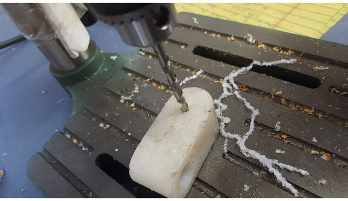 Drilling the holes in the blank.
The finished coupler.
With this done, I could then attach the coupler to the tower, install the steering column, and attach the front wheels to the steering column via the tie rods to complete the chassis assembly.
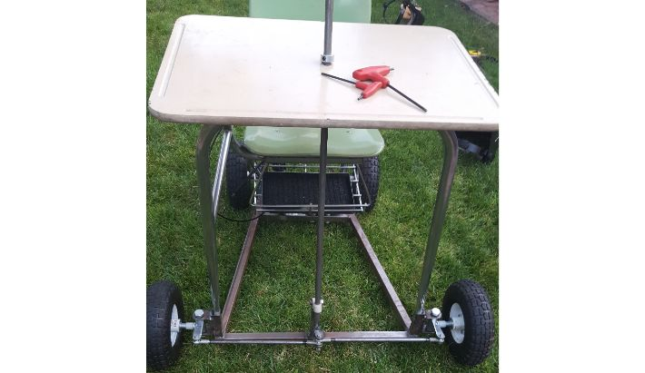 Steering Assembly complete.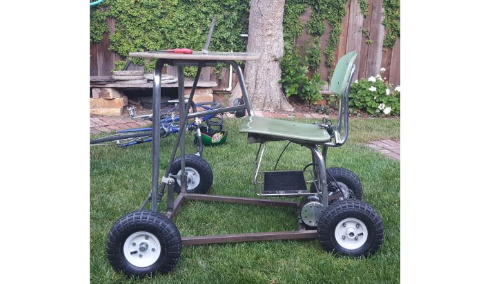 Chasssis assembly complete, gokart progress at this point.
Steering Wheel and Controls
Next, I needed a steering wheel. I opted to use hand controls in this build, since there was not enough room within the desk frame perimeter for me to comfortably actuate foot pedals. I wanted to utilize bicycle hand brake levers, which do not fit well over a traditional steering wheel. Because of this, I decided to fabricate my own steering wheel.
Designing the steering "wheel" took several days of hard thought. The final design utilized bar stool ring that I cut in half and welded spokes to as the base structure, providing a pilot's yoke like form of steering control.
I began fabrication by cutting the bar stool ring in half, then tracing its outline onto a flat surface (in this case I used my desk panel) before drawing in the rest of the components.
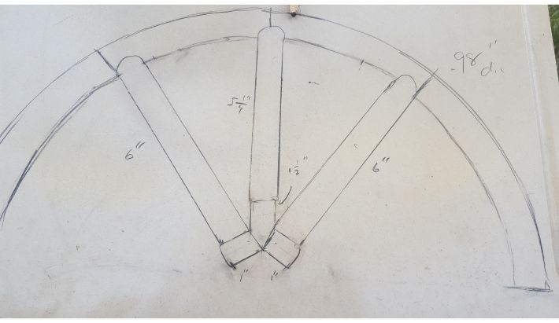 My master plan for the steering wheel design.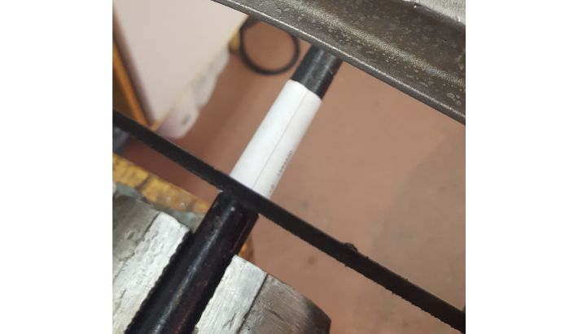 Cutting the spokes.
Laying out the spokes with the steering wheel spline adapter for reference.
With the spokes cut, I started fabricating the center hub to which the spline adapter could be attached. I fabricated this out of 3/4" steel square tube, which hacksawed and ground to shape.
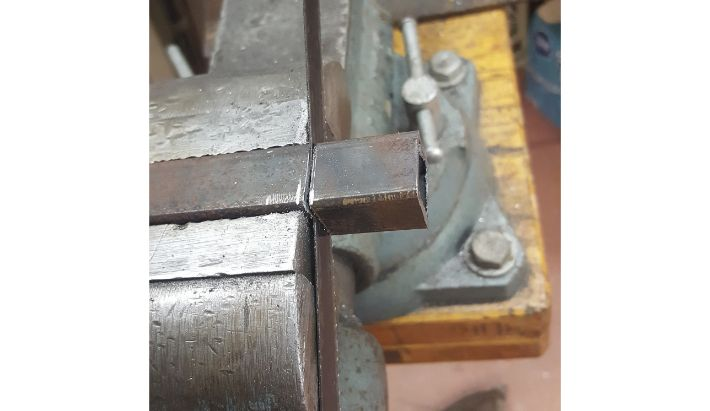 Cutting steel for the tri-star hub.Grinding profile into a tri-star arm.
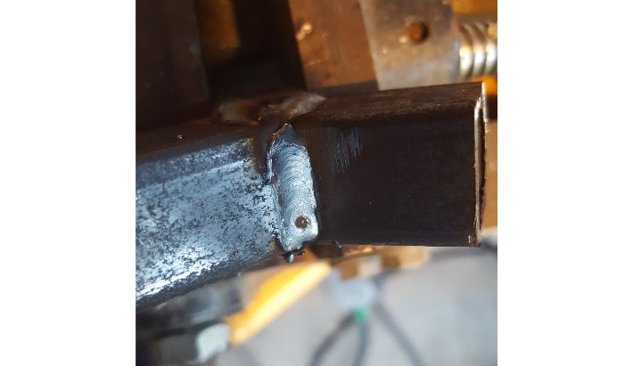 Welding the tri-star hub together.
I then welded the spokes to the tri-star hub, and then the half-ring to the spokes to finish the basic profile
 Preparing to weld the spokes to the tri-star hub.
Preparing to weld the spokes to the tri-star hub.
Welding the spokes to the tri-star hub.
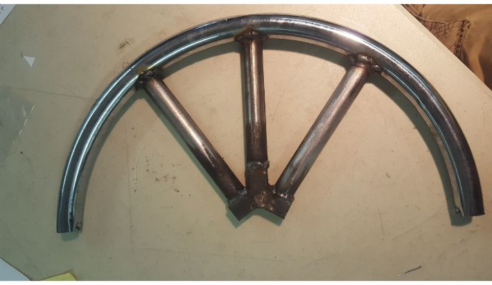 Welding the half ring to the tri-star hub assembly, completing the main profile of the wheel.
Next, I prepared the wheel to attach to the steering column. The end of the steering column is splined on the outside, and fits into an adapter with matching female splines. The adapter can then bolt to the steering wheel. So, I drilled holes in the tri-star hub that matched the bolt pattern on the adapter, and bolted everything together.
Drilling holes in the tri-star hub.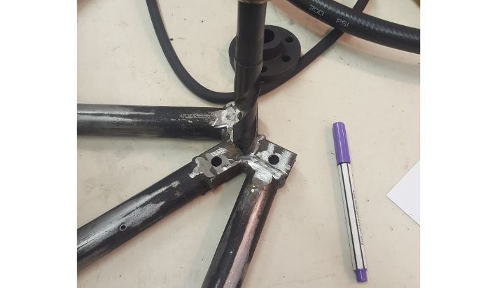 Drilling holes in the tri-star hub to accept the adapter.
Adapter bolted on to the steering wheel.
My plan with the thumb throttle, after going through several prototypes, was to mount it to the steering wheel and actuate it with a bicycle brake lever linked with brake cable. To make this happen, I first welded some tube that was the same diameter as the throttle to the wheel. Then I welded a bit of 3/16" steel round slightly behind the throttle mount to provide an anchor point for an auxilliary return spring.
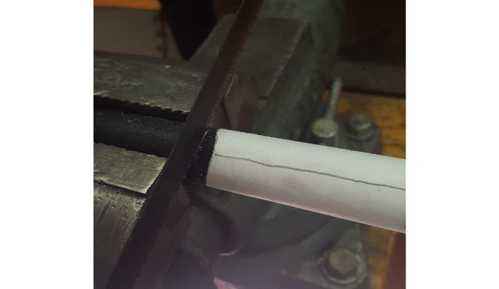 Cutting the tube for the throttle mount.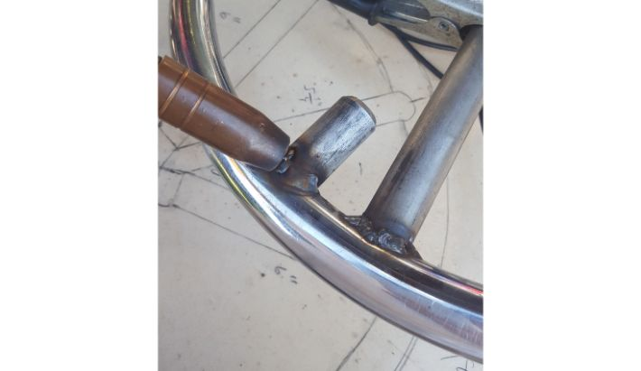 Welding the tube to the steering wheel.
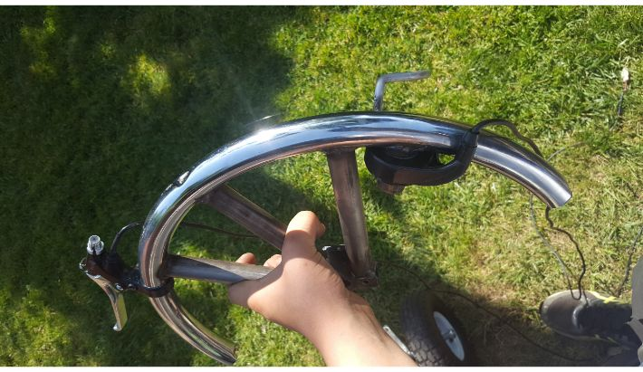 Thumb throttle installed.
To hold the brake cable for the throttle in place, I fabricated and welded down a ferrule to the throttle mount tube.
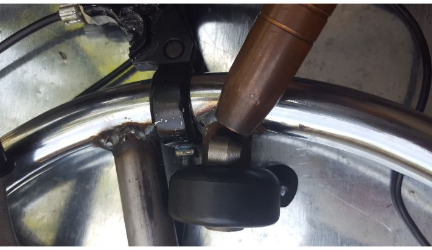 Welding down the ferrule.Cutting the spring anchor rod.
Welding down the spring anchor rod.
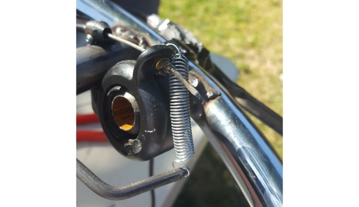 Throttle assembly complete. Note the installed brake lever for actuation in the background. Pulling the lever pulls the brake cable, which pulls the thumb paddle of the throttle forward, activating the throttle.
Next, I drilled holes at the base of the central spoke and at the very center of the half ring so I could internally route the brake and throttle cables.
Drilling a hole in the central spoke for cable routing.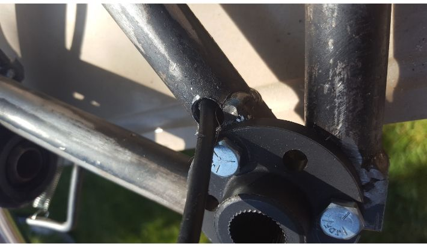 Brake cable routed through.
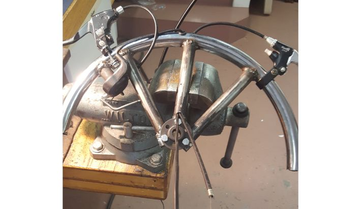 Brake levers attached, all cable routed through.
I then drilled a hole in the desk just above the steering column to accept the cables.
Hole drilled in the desk to allow for cable routing.
I routed the cables along the desk frame, completing the controls system for the gokart.
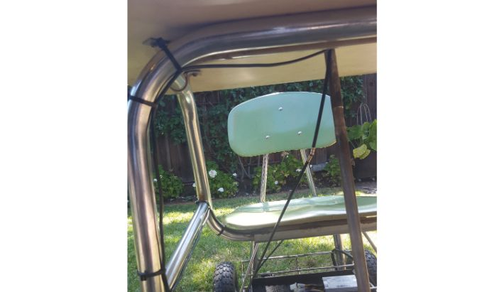 Routing the cabling. I would eventually get a better length of brake cable housing that runs the whole length of the frame.Brake and motor hooked up. Ignore the horrendous chain tension, that would be fixed.
Electronics
With all of the steering and controls done, I moved on to the electronics. I wired the battery pack first. The battery pack is made of four 12 volt 18 amp hour sealed lead acid batteries wired in series to produce 48 volts. I connected them with 8ga stranded copper wire and ring terminals.
The rest of the electronics were very straightforward. I mounted the motor controller under the seat. From there, all I had to do was connect the throttle, batteries, and motor to their respective inputs on the controller, and the build was done.
Soldering ring terminals to wire for battery connections.Finished battery connections.
Batteries, connected.
Motor controller mounted underneath seat.
Finished!.
Better shot, less busy background.
Test drive to Jack in the Box! Employees took it well.
That concludes the build of the desk go kart. It took approximately five months of weekends to complete.